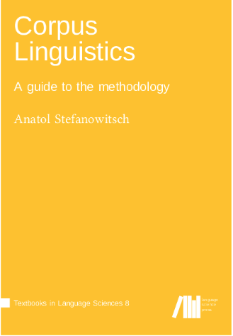
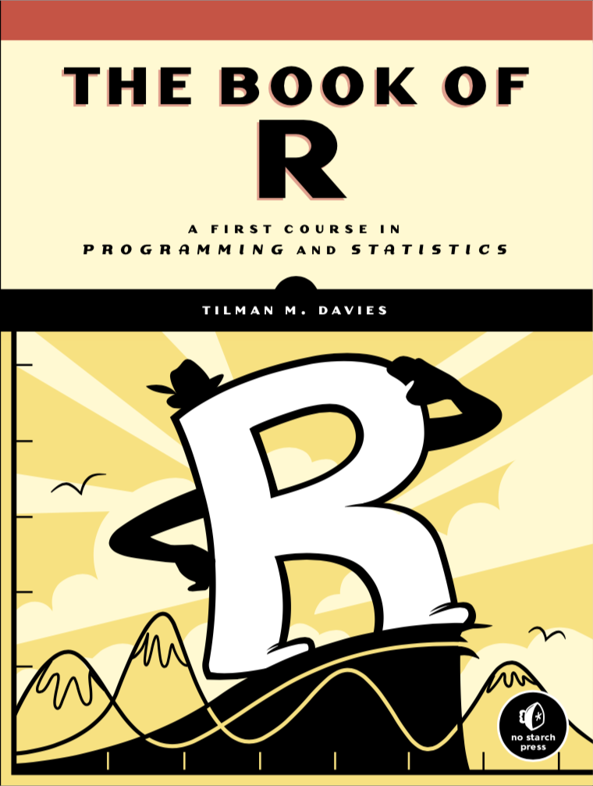
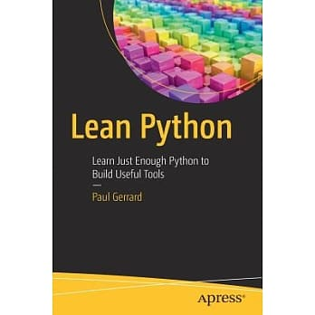
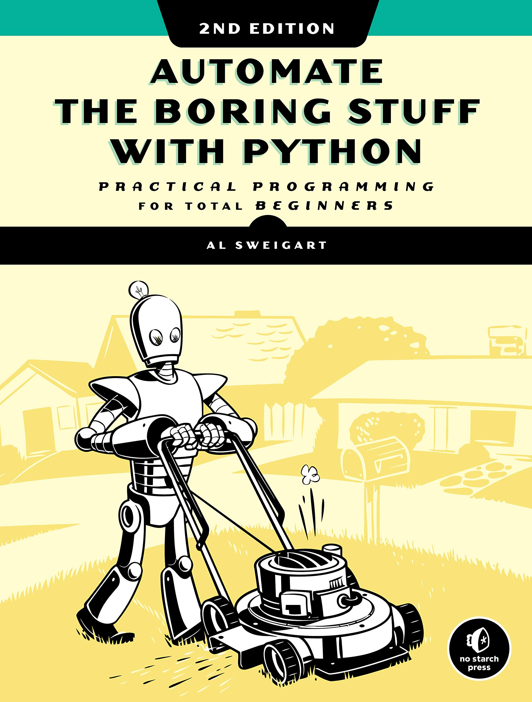

Processing Chinese Data with R
April 26, 2022, @ HKSYU (Online Workshop)
Introduction
The theme of this workshop is Chinese text processing with R. I will introduce a few useful R libraries that can be utilized for text analytic tasks. Also, I will focus on an important step in Chinese processing, namely, the word segmentation/tokenization, and show how to attend to this step in the pipeline. Finally, I will demonstrate a few potential applications of data analysis visualization with the help of the attractive informative graphs with R.
Structure of the Workshop
- Environment Setup
- Working Pipeline for Text Processing
- Chinese Word Segmentation
- Applications
- Concordances
- Frequency Lists
- Word clouds
- Patterns
- N-gram/Lexical Bundles
Data
All the data sets used in this workshop are available in the Dropbox directory demo_data.
Materials
In the lecture notes, the text boxes in light blue refer to codes that you need to run in either terminal or your R/Python console. The text boxes in black background show the outputs of the code processing.
We will follow this presentation convention throughout the entire lecture notes.
print('Hello! R!')[1] "Hello! R!"Resources
The course lectures will follow the materials provided on the course website. Please preview the lecture notes before the class.
Also, for each topic, please review the assigned readings on your own. These readings will be part of the midterm and final exams as well.
In particular, we will be referring to two useful reference books as our main reading materials– Stefanowitsch (2019), Gries (2016).

In addition, there are a few more reference books listed at the end of the section (See References), which we will refer to for specific topics, including Gries (2021), Baayen (2008), Brezina (2018), McEnery and Hardie (2011), Wynne (2006), Winter (2020), Hunston (2022), Bird, Klein, and Loper (2009).
Throughout the semester, we will follow the materials provided on our course website (see below). We will not use a particular textbook for the course. However, I do like to recommend Wickham and Grolemund (2017) for its simplicity.

Also, another great book for R lovers, by Davies (2016):

And two more comprehensive books for Python basics: Gerrard (2016) and Sweigart (2020):
